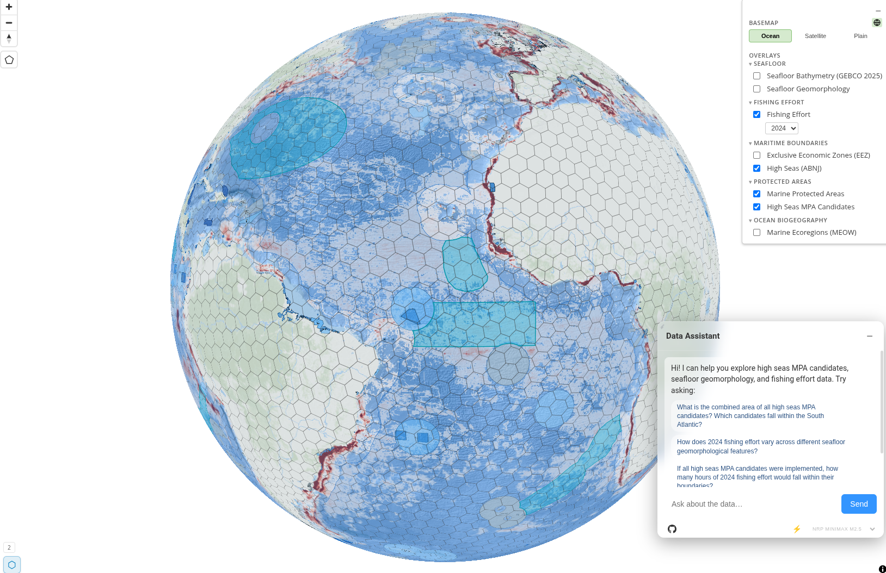

geo-agent
A conversation interface for geospatial data
Carl Boettiger · DSE
Ask the map.


The wolves of California
Gray wolves are returning to California after nearly a century. A public dashboard lets residents follow pack territories, ask where wolves have been seen, and explore the habitat that's drawing them back.
The high seas
Two-thirds of the ocean lies beyond any nation's jurisdiction. The UN's new high-seas treaty creates the first framework for protecting biodiversity there. Negotiators use the map to compare candidate areas across fishing pressure, biodiversity, and climate refugia.

Land & water in the balance
Trust for Public Land
Mapping the parcels behind ballot measures — what's protected, what's at risk, who has access.
NASA-supportedCalifornia 30×30
Tracking the state's commitment to conserve 30% of lands and waters by 2030.
with the California Biodiversity NetworkGreater Yellowstone
Public and private dashboards for stakeholders working across the largest intact ecosystem in the lower 48.
with the Stone Center for Conservation ScienceBlue Boundaries
Helping prioritize where wetland conservation investment goes furthest — for biodiversity, carbon, and people downstream.
with National Geographic SocietyHumboldt & the North Coast
Local-scale habitat and land-use exploration for community partners.
UC Berkeley field collaborationsOne catalog behind every map

Open, browsable, growing — every dataset queryable in plain language.
Built with partners
github.com/boettiger-lab/geo-agent
cboettig@berkeley.edu